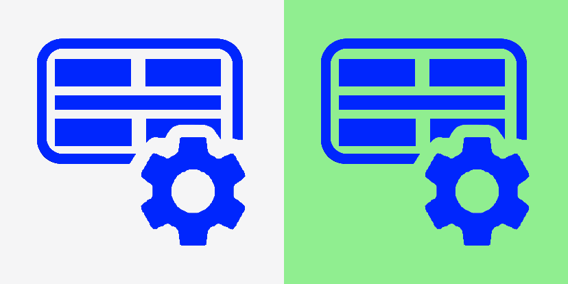
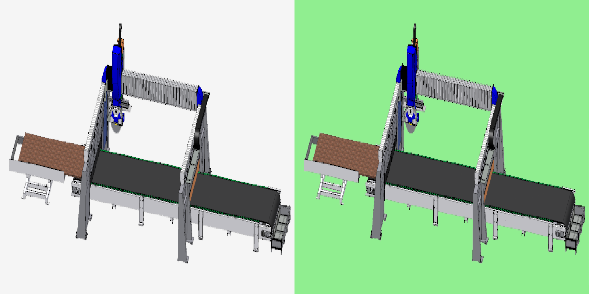
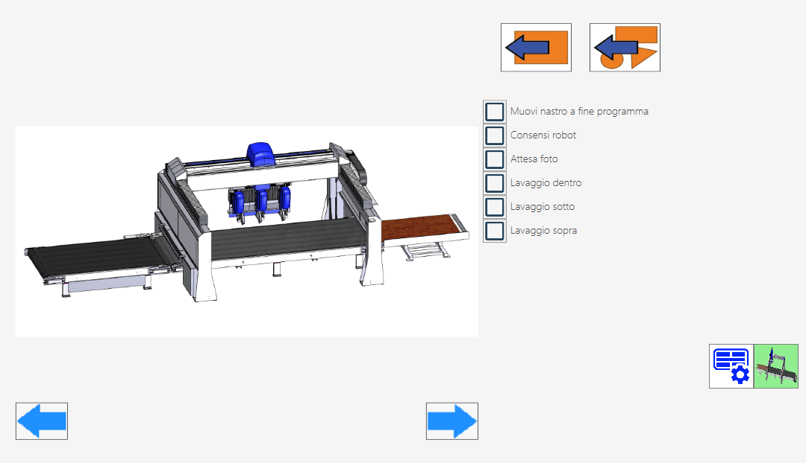
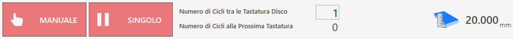
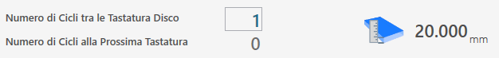

The ISO file programming list page allows to execute more programs consecutively, created previously through CAD-CAM programs, for machines with two working areas, Twin machines or programs with more workings created when already the machine is in function.

Top bar
In the upper bar are reported monitoring information of the progress status of the list.

  | Execution state of the list |
   | List advancement bar |
List advance bar
This progress bar provides information on the execution state of the ongoing ISO program, offering at the same time a general overview on the next program in list and on that which has completed the processing phase and is passed to the unloading.

In the previous image, no program is yet visible in the downloading phase, because the list execution has not been started and no piece has yet been processed. Conversely, if there is only one ISO file in the list or the processing has been started and all other files have already been executed, the 'Next' section will appear empty.
During the execution, the program's advancement state will be visible in real time, as illustrated below.

Side menu
On the right side of the vacuum panel there are some buttons related to the management of individual files in the programs list.
Execute next program | |
Move selected element higher | |
Move selected element lower | |
Delete selected element | |
 | Suction cups panel |
 | Belt panel |
Suction cups panel
Is possible to use the suction cups manually to move some pieces from one work zone to another.

Suction cups buttons
 | Enable / disable suction cups |
 | VACUUM CUPS: UP - Vacuum cups parking |
 | VENTOSE: LOWER - Prepare suction cups |
 | RAISES PIECE: RELEASE - Download piece |
 | RAISES PIECE: START - Piece raising |
  | BLOW - Command Blow |
  | Vacuum - Command vacuum pump |
Safety conditions
Pay particular attention to the suction cups active during the lifting, making sure that the areas used are sufficient to lift the piece object of the handling. Try to always use the largest area of vacuum available to carry out the piece’s grip and check that there are no defects and breakage on the material that could create dangers or problems to the machine’s functioning.
Once turned on the vacuum pump, its turn off is permitted only through automatic functions predisposed for the purpose. The pressure of the reset button or the emergency mushroom has no effect on the vacuum pump which will continue to function. The turn off of the pump can be forced through the suitable button inside the 'Additional Commands' page.
In the automatic procedures, before performing the piece lifting, the vacuum status is checked through a dedicated sensor: if a sufficient vacuum value is not detected, the alarm 'vacuum missing' appears. The pump will continue to remain active until the vacuum sensor detects a correct value, or if it is disabled from the 'Additional Commands' page.
WARNING!The lack of feeding to the vacuum pump implies a quick loss of the same and the consequence fall of the material lifted with the vacuum cups.
Panel Belt
The page allows to manage the load and the unload of the slabs through the conveyor belt located under the machine.
WARNING!Before acting on the ribbon controls check the work area, both in input and in output to the line, to check the presence of people and avoid useless risks.

Upper bar buttons
 | Automatic sheet load
|
 | Unloading of pieces |
Parameters tape
In the page there are flags that allow the selection of options characteristic of the machine.
Move the tape at the program end | Enable the move auto of the pieces executed in the discharge zone at the end of the program executed. |
Allow robot | Enable robot. |
Wait for picture | Interrupt the execution of the program list at each execution |
Washing inside | Enable the washing internal. |
Washing below | Enable the upper washing of the slab. |
Washing above | Enable slab washing. |
Bottom bar buttons
Pressing the appropriate buttons it is possible to move the tape both to the right and to the left.
Manual handling of the tape to the left | |
Manual handling of the belt to the right |
Lower bar
In the bottom part of the bar are shown some functions related to the execution of the ISO Program List, also tool and slab monitoring.

Execution List Management
In the lower part we find also the two buttons related to the execution modes of the programs.
  | Manual / automatic |
  | Single / Next Automatic |
Slab monitoring and probe cycles
In the center and on the right of the bottom bar, the operator can configure periodic monitoring of the tool diameter, setting checks at intervals defined based on the number of cycles performed.

 | Number of Cycles Between Disks' Probes |
 | Number of Cycles To The Next Probe |
 | Slab thickness |
Execution ISO Program List
The ISO program list is automatically expanded as ISO are generated in Parametrix, in any case the operator can relocate elements within the list or remove them from it based on their needs.
Before proceeding with the execution of the list, the operator has the possibility to set the number of cycles that will be performed between the tool keyboard operations.
Then the number of remaining cycles to the next probe will be updated and visible.
The operator starts the execution of the program list by pressing the 'Start cycle' button. In this way, the programs are executed in sequence, with the simultaneous viewing of the current program, the one that will be executed next and the one already completed.
If the execution mode of the programs is set to Manual and Single, the execution of the list will be interrupted at the end of the program running, just after having prepared the next program to run.
In such event, the operator has the possibility of pressing the Next button when he deems it more appropriate and proceed with the execution by pressing again the 'Start Cycle' button.